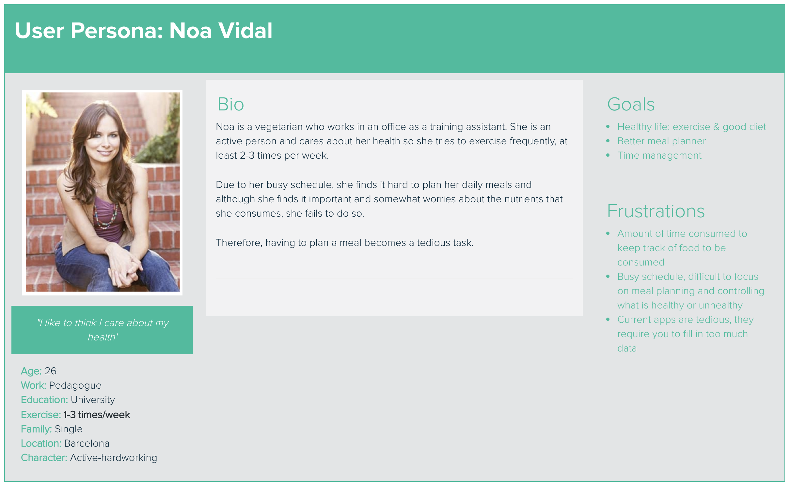
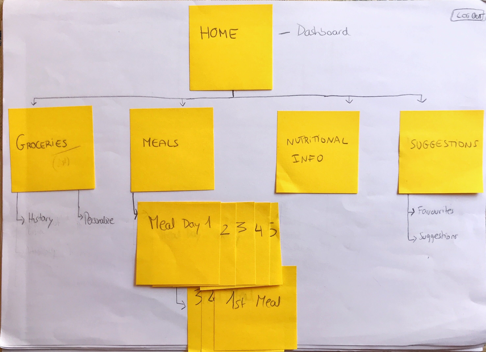

VEGGIT

This challenge consisted in designing for NWI, a fictional company that wanted to reinvent itself by developing tools to help people achieve their health and wellness goals. Even though NWI had many years of experience in the wellness field, their program had been slow to catch up with technology. They had seen a substantial drop in memberships and wanted to find a way to add value to their members. So the task to be completed was to:
My role included all the design thinking process: from brainstorming for ideas to understanding the user, defining a final product, prototyping and testing it. This project was to be completed in 4 months, from June to September.
1. RESEARCH
I first had the idea to focus on a growing specialized market, vegetarian. It would be an App especifically designed to help vegetarians achieve their fitness goals via a nutrition tracker , I did and initial background research to understand more about the target group's perceptions on fitness & nutrition. The methodologies used where surveys and also 5 interviews.
Although the survey and interviews results showed the majority of vegetarians who responded do like taking care of their health & fitness, the interviews revealed a major concern regarding my idea: tracking the nutrients you consume may be good but it can turn into an obsessive behaviour, to a point that you stop enjoying the simple fact of working out and being vegetarian.

“I used to track some food choices but after some time it just takes up to much time to estimate portion sizes and add all items to the app”
“Good data, but time consuming to fill out”
“I feel like with an app I would give too much time to control my diet and it could turn into a little obsession”

From all gathered data, I realized it was mainly vegetarians aged 24-33 that care more about their health but do not have that time to fully focus on it
DEFINING THE PROBLEM
These insights helped me identifying what their real problem was: vegetarians that workout or exercise do not have enough time to plan their meals.
And motivated me to focus in another direction by addressing this problem as follows:
“An app for vegetarians to plan their meals based on the groceries that they have purchased or they already have home/on their fridge”. No hassle, no overthinking, the aim is to provide delicious meals based on what they already have and thus making it an efficient and fun way of eating healthy food.
2. IDEATION & DESIGN
To start defining the key features, I started a brainstorming session to come up with ideas with diferent techniques:


To communicate the main idea, I then created a user journey map to portray the desired user journey.

3. PROTOTYPE
Considering the design implications, I planned the structure of the information as follows:
And to rapidly explore the idea I then did a few basic sketches to conceptualize it a bit more:


"As a user, I can add my list of groceries into the app which will prepare me a weekly meal plan with the products I introduced so that I already know what to cook at each time. "

"As a user, I can access my weekly meal plan (based on my ingredientes), where I can check what my next meal is right away, so that I don’t waste time thinking about what to cook for lunch or dinner."

Create your list of groceries you just or that you already have at home by adding them to the list.
The app will automatically create a weekly meal plan based on the products you introduced so that you can check what to prepare to eat each time


Finally, considering your regular products, the system will suggest you new delicous recipes that you may like, and if you don't have some of the ingredients, you will be able to add them to your shopping list right from the recipe.
Before the final design, I did an initial wireframe which I used to test the concept with 4 users in order to validate the user flow and the patterns. Thanks to this, I found out that the key feature, adding the list of groceries, was overwhelming as it was overly charged with dropdown lists with the different product categories so I iterated on it and created a new prototype.
You can see the evolution of this main feature, adding the list of groceries, as I was trying to improve it here:

first version

second version
And here is how the meal planner changed of design and patterns:

first version

second version

third version
Through the testing round I was able to discover weak points in the design and iterate on them, again this shows how important is it to test your designs in early stages in order to make amends before any final releases. You can see some examples as follows:
Pattern unification
Again, testing! One can get blinded by her own designs!